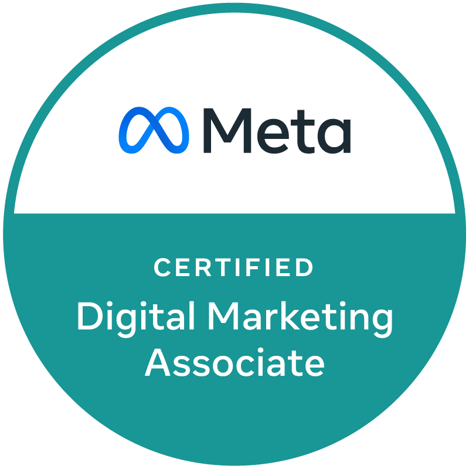
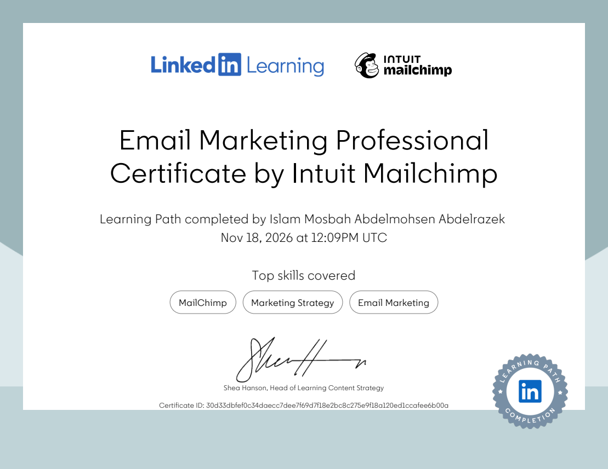
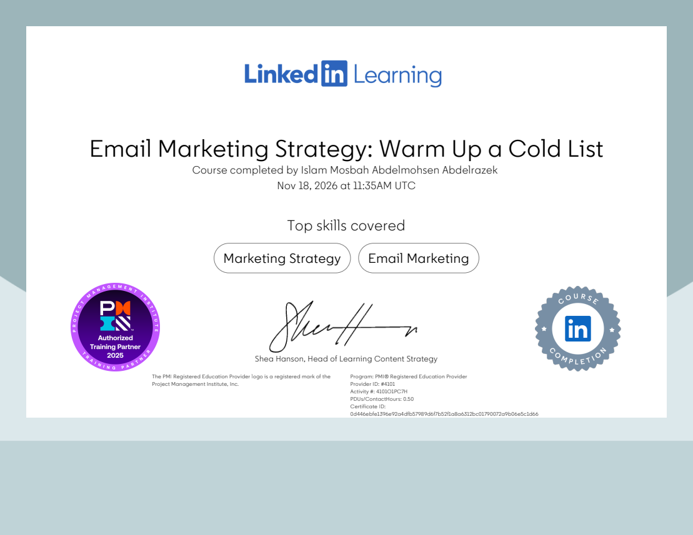
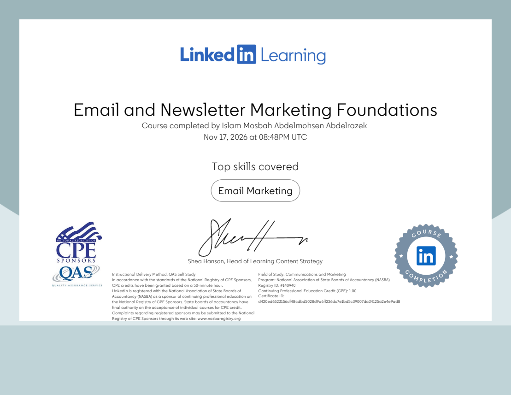

A filmmaker’s eye.
A marketer’s mind.
I combine account management, performance analysis and hands-on Meta Ads execution to solve advertisers’ challenges and improve results.
Explore case studies ↙Download CV (PDF, English) ↓Creative opens the door.
Data guides the decision.
The decision behind the result.
From Saudi Arabia to Egypt: a localized market-entry strategy
I developed the expansion strategy, adapting audiences, creative, products and budget to the Egyptian market.
Comparable sales volumes and ROAS to the Saudi market in approximately six months.Read the case study
From buyers’ questions to persuasive product stories
I developed the concept and directed customer research and video teams, turning five recurring problems into stories that demonstrated product solutions.
Reported sales growth of 30% in the year following the campaign.Read the case study ↗
Testing creative before ad spend
I designed the reel scoring framework and paid testing recommendations, developed creative concepts and led weekly performance reviews.
Website ROAS: 5× → 6.3× · +26%Read the case study ↗
From chat-based selling to a data-driven, automated store
I developed the strategy, built the campaigns, selected ads and audiences, allocated budgets and led measurement and purchase journey improvements.
ROAS reached 81× in some campaigns (before excluding returns and refused deliveries)Read the case study ↗
Connecting online and in-store sales for a honey retailer
I analyzed performance and built campaigns with the client, connecting measurement across the website and 13 branches to guide targeting and bidding.
ROAS in one campaign: 12.53× · Purchase Event Match Quality: 8.5/10Read the case study ↗
From student enquiries to paid enrolments
I redesigned student recruitment and corporate training campaigns around programme-specific landing pages, student UGC as social proof and monthly webinars for companies.
Approximately 70% higher conversion rate to paid enrolments and 40% lower cost per paid enrolment.Read the case study ↗
Hi, I’m Eslam Mosbah.
Account management, from strategy to execution.
At Concentrix, I worked as an Account Manager under direct supervision from Meta. Meta assigned me advertiser accounts and responsibility for the client relationships, including businesses investing thousands of dollars each month in Meta ads.
Over nearly six years on the Meta project at Concentrix, I contributed to analyzing hundreds of ad accounts and building approximately 1,000 campaigns. I led weekly or monthly client meetings to analyze, build, implement and optimize campaigns around their business objectives.
My responsibilities combined performance analysis, advertising strategy, campaign execution and technical troubleshooting. I served as the main point of contact between advertisers and Meta’s specialist teams, coordinating solutions to account, measurement and performance issues.
I have built and managed campaigns across a wide range of industries. These include real estate, e-commerce, fine jewelry, commercial apps, and trading and stock-market platforms. I adapt targeting, creative and measurement to each advertiser’s business model.
I studied competing advertising platforms, including Google and TikTok, to inform Meta strategies through a broader understanding of audiences, creative and advertising approaches.
Writing, film & visual content
I am also a novelist whose work has been translated into several languages. As a filmmaker, I understand the full video and photography production process, from concept and scripting to shooting, editing and post-production. I bring this experience to written and visual content that connects strong storytelling with audience insights and campaign objectives.
Three steps. One constant question: why?
Audience before message
What is the campaign objective, who is the audience and where do potential customers drop off?
A clear testing hypothesis
I build campaigns and test creative and audiences against clear performance objectives.
Decisions grounded in performance
I analyze results, adjust campaigns and resolve issues to improve performance against advertiser objectives.
Let’s talk about the next opportunity.
For job opportunities or collaboration, send a message or connect with me on LinkedIn.
Connect on LinkedIn ↗Professional credentials. Continued learning.
Selected certifications and completed learning programmes in marketing, advertising and AI.

Meta Digital Marketing Associate
Meta · Professional certification

Google Ads Creative
Google · Certification

Digital Marketing
LinkedIn Learning · Learning path

Email Marketing Professional
Intuit Mailchimp · LinkedIn Learning

LinkedIn Marketing
LinkedIn Learning

Cold List Email Strategy
LinkedIn Learning

Email & Newsletter Foundations
LinkedIn Learning
Generative AI Workflows
LinkedIn Learning

Generative AI Basics
IBM SkillsBuild

Large Language Models
IBM SkillsBuild
Select a certificate to view the original.